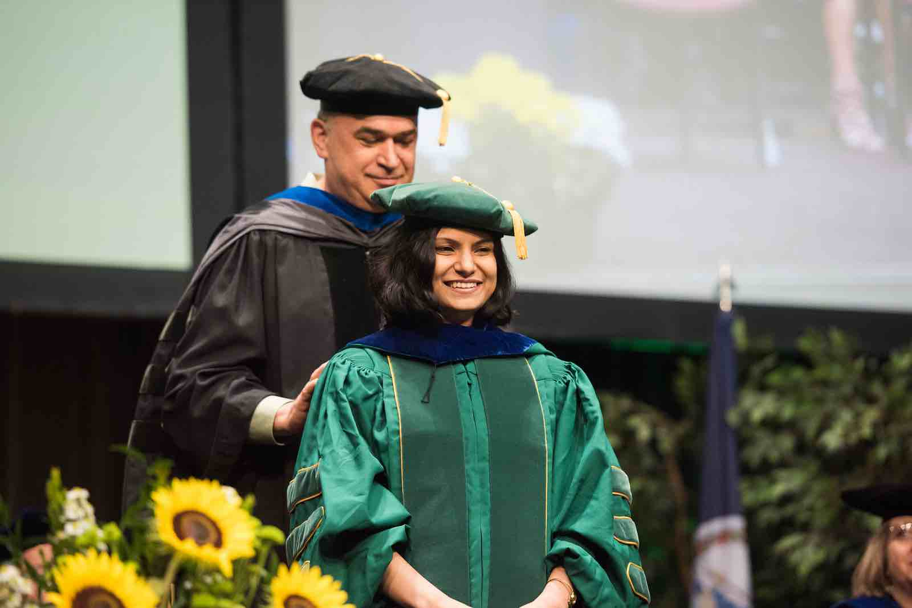

Graduate Application - Recommendation Requests

Information for Requesting a Letter of Recommendation for Grad School
Congratulations on your decision to pursue a Master's or Doctoral Degree!
There are a few general guidelines that I have if you have an interest in asking me for a Letter of Recommendation.
General Guidelines
- General Recommendations (For any Recommendation)
- Find a Professor for a Course you got an A in
- We talk about your Academic Standing, your Exam and Project Grades, and any general other Academics for all of the courses you have taken with us.
- Find a Professor you have Worked with (Research/TA)
- We have a lot more exciting things that we can add in to the recommendation for students who have served as RAs or TAs for our courses.
- Find a Professor you have done a Project with
- If you have project experience with us (outside of a course), that gives even more that we can talk about to make it a much stronger recommendation.
- Find a Professor you took for a Course in your Desired Field of Study
- It is a much stronger recommendation as well if we can relate our course and your performance in that course with the field you are applying to study in.
- My Recommendations Generally Require:
- "A" Grades in all of the Courses for which I was your Professor
- Preference will go to any former UTAs, as you also have Work Experience with me for one of my Courses.
If you would like my recommendation for a Graduate School Application
- You need to have at least an A in all courses I was your Professor for.
- I look strongly at all Projects and Exams Overall.
- Send me an email (kandrea @ gmu.edu) with the following information:
- Your Name and G-Number
- Which Courses and Semesters you took it with me
- Which University, Department, and Program you are Applying for (or thinking of Applying to)
- The Deadline when you would need the Recommendation By
- Answers to the following questions (as much information as you want to share!):
- What are your long-term career or professional goals?
- What are your interests in pursuing a Graduate Degree?
- What field of study/concentration are you interested in?
- How did my courses (CS 262/367/471/571) help shape your direction, or what did you find interesting about the course topics/material?
- Was there any project that you particularly enjoyed in one of these courses?
- What are your plans for the future in Computer Science?
- Do you have any interest in a possible future with teaching or mentoring?
- Please feel free to tell me anything else about your interests or any Research or Projects you have worked on outside of classes!
My letter of recommendation would be mostly based on your academic performance in the class and would involve discussing your exam and project grades, which would ultimately go to the respective directors of graduate admissions.
This will also let me know some of your interests in pursuing graduate school. Please also let me know if there is anything you would like for me to highlight in the recommendation. If there is anything you would like me to highlight from the course, such as a particular project, or any particular topic you found interesting, that would also help quite a bit.